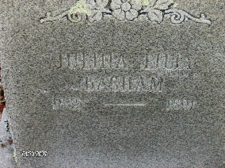

Lilly line · Ellison Ridge, Summers County, West Virginia
Profile status: SUPPORTED
Quick Facts
Born
28 June 1835, Giles County, Virginia SUPPORTED (the memorial, read directly, gives 28 June 1835; nine sources on FamilySearch and five on Ancestry agree, and the marriage register ages fit. The 20 June variant rests on a book index only. The stone gives years only, and no civil birth record can exist for 1835 — Virginia registration began in 1855)
Died
9 May 1891, Summers County, West Virginia, age 55 SUPPORTED (the memorial and universal compilation agreement, with consistent age math. No 1891 death-register entry exists in the West Virginia index — a genuine negative)
Married
William Blaine Basham, 5 June 1856, Mercer County, Virginia DOCUMENTED (marriage register image, line 13: bride 20, parents “J. & Polly Lilly”; groom 27, widowed, mother Rhoda Basham; minister Rev. J. C. Hubbard)
Buried
Basham Cemetery, Ellison, Summers County, West Virginia SUPPORTED (memorial 8218959; the stone reads “JULINA LILLY / BASHAM / 1835 — 1891” — years only, no month or day, no “Lydia”, no places — and looks like a later replacement stone, not an 1891 original)
Name
“Julina”, not “Juliana” SUPPORTED (every record and compilation read spells it Julina — the memorial, the stone, the marriage register, the censuses, the county history. “Juliana” is the roster spelling only. Her middle name “Lydia” is SUPPORTED by two unrelated compilers, Edgar and the memorial title; it appears in no record read)
Joseph is Julina’s father by the 1850 census, which puts fifteen-year-old Julina in his household, and by the 1856 marriage register, which names the bride’s parents “J. & Polly Lilly”. Her mother was Polly — carried as a strong reconstruction, not directly proved: no record names Julina’s mother directly, but Julina was born during Joseph’s first marriage (1825–1839/40), her sister Margaret Tiffany is directly named as the daughter of Joseph × Mary Elizabeth Shrewsbury, and Joseph’s second wife, Elizabeth C. Thompson, was about thirteen when Julina was born and did not marry Joseph until 1840. The 1825 Giles County register writes the bride “Polly Solesbury”; the trees write “Mary Elizabeth Shrewsbury” — the same woman, the spellings being variants of one name in this family. Behind Joseph the chain breaks in two places: no record names Joseph as the son of Edmund Lilly × Edith Meador, and no record links that Edmund to Robert Lilly. The full conflicts are in Research Notes.
Spouse
William Blaine Basham (born 5 April 1828; died 20 August 1914), married 5 June 1856, Mercer County, Virginia DOCUMENTED
Her only husband. He had been widowed that February, when his first wife, Mary Elizabeth (or Margaret) Peters, died; he married third Elizabeth “Bettie” Cooper on 27 February 1893, after Julina’s death.
Children
John Albert Basham (born May 1856; died 3 July 1915; married Amanda Catherine Pittman 15 April 1876) SUPPORTED Henry Johnson Basham (born 1 July 1858; died 1915; married a Pettery / Pettrey, unnamed) UNPROVED Armita Caroline Basham McKinney (born 7 February 1860; died 30 July 1923; married Luke McKinney 31 August 1876) SUPPORTED Margaret Lucinda Basham McKinney (born 11 June 1861; died 12 February 1914; married Rev. Allen Marshall McKinney 1877) SUPPORTED Rosabelle Lee Basham Lusk (born 14 April 1862 or 1863; died 1891; married A. Lusk) UNPROVED William J. Basham (born 5 May 1865; died young) UNPROVED Robert Hugh Basham (born 15 August 1866 or 1867; died 24 May 1952; married (1) May Martin 1887, (2) Sarah M. Hatcher 1891) SUPPORTED Isaac Edmond Basham (born 23 May 1869; died 21 January 1912; married (1) Malinda Elizabeth Harvey, (2) Sarah Margaret Farley) SUPPORTED Sylvanus Eanon “Enon” Basham (born 23 November 1870; died in Michigan, date unknown; married Emma Pack 9 January 1902) SUPPORTED Virginia A. Basham (born 6 November 1872; died young) UNPROVED Louanna A. Basham (born 6 July 1875; died 1951?; married (1) John Halm, (2) Steve Loren — both unproved) UNPROVED Aden Lewis Basham (born 11 December 1877; died 5 January 1967; married Ollie Via Pack 29 January 1902) SUPPORTED
Twelve children, all Julina’s; Margaret Lucinda is the direct line. William’s four older children by Mary Peters are not listed here. Geni wrongly assigns James Preston and Lizzie to Julina — both were born before the 5 June 1856 marriage. John Albert was born in May 1856, a month before his parents married. William Joseph and Virginia Alifare appear on FamilySearch only, absent from the 1870 and 1880 households. Henry Johnson, born 1 July 1858, does not appear in the 1860 household. FamilySearch IDs: John Albert K26Y-JJS; Henry Johnson 9VHL-T9B; Armita Caroline 9FMH-T2C; Margaret Lucinda LHQT-BGM; Rosa Belle 9J39-KYK; William Joseph K26Y-JRQ; Robert Hugh LLM4-3RK; Isaac Edmond K26Y-JB6; Sylvanus Eanon K26Y-VMV; Virginia Alifare K26Y-V9L; Louanna Arabeth L4QC-V4H; Aden Lewis L7NV-2KJ.
Siblings
Anderson C. Lilly (1826–1864) SUPPORTED Savina Lilly (1827–1899) SUPPORTED Hugh James Lilly (1830–1864) SUPPORTED Margaret Tiffany Lilly (1832–1864; married Robert Washington Lilly 5 June 1856) SUPPORTED Rhoda Jane Lilly (1837–1910) SUPPORTED Joseph Remley Lilly (1838–1903) SUPPORTED
Full siblings, the children of Joseph × Polly — the one place the tree profiles agree on the first-wife children. Half-siblings by Joseph’s second wife, Elizabeth C. Thompson (married 7 November 1840, Fayette County): Johnson Keaton Lilly (1841–1921); Annie Lilly Maxey (1842–1933); Nancy Caroline Lilly Mann (1844–1930); Isaac Lilly (1846–1863); Elizabeth Lilly Roles (1848–1937); Henry Lee Lilly (1849–1902); Lucinda A. Lilly (1852–1896); Edward H. Lilly (1854–1929); Russel French Lilly (1857–1939); Aden Thomas Lilly (1860–1878); Louisa Frances A. Lilly (1862–1947); Jane Lilly (1863); Allie Faire Virginia Lilly (1864–1955); Nancy Lilly (1865); Thompson Lilly (1867); Mary Frances Lilly (1868–1950). FamilySearch lists sixteen half-siblings; Geni counts thirteen — the count is open. No sibling has a profile page, so no sibling name is linked here.
28 June 1835 · age 0
Born, Giles County, Virginia SUPPORTED (the memorial; nine sources on FamilySearch and five on Ancestry agree)
1850 · age 15
Census, Mercer County, Virginia: “Julina Lilly, 15” in the household of Rev. Joseph L. Lilly SUPPORTED (transcription)
5 June 1856 · age 20
Married William Blaine Basham, Mercer County DOCUMENTED (marriage register image, line 13)
1860 · age 24
Census, Mercer County, Virginia: William 32, Julina 22, and the five oldest children DOCUMENTED (image read)
1870 · age 35
Census, Barkers Ridge, Wyoming County: Julina 35, keeping house, with ten children at home DOCUMENTED (image read)
1880 · age 44
Census, Barkers Ridge, Wyoming County: Julina 45, keeping house DOCUMENTED (image read)
9 May 1891 · age 55
Died, Summers County, West Virginia SUPPORTED (the memorial; no death-register entry found)
Burial
Basham Cemetery, Ellison, Summers County SUPPORTED (the stone gives years only)
Life Story
Julina Lydia Lilly was born 28 June 1835 in Giles County, Virginia, the daughter of the Reverend Joseph L. Lilly and his first wife Mary Elizabeth “Polly” Lilly. She was fifteen in her father’s Mercer County household in 1850, and married William Blaine Basham on 5 June 1856 in Mercer County — he had been widowed that February, when his first wife died. Twelve children followed between 1856 and 1877, and her daughter Margaret carries the line, marrying the Reverend Allen Marshall McKinney in 1877.
The record spells her name Julina, never Juliana — the stone, the marriage register, and every compilation read Julina — and her middle name Lydia rests on two unrelated compilers. Her birthday is carried as 28 June: the memorial and nine sources on one tree and five on another agree, against a book index that gives 20 June, and the stone itself gives years only.
Her mother’s name is the one puzzle of her parentage. The 1825 Giles County register writes “Polly Solesbury” for Joseph’s bride; the trees write “Mary Elizabeth Shrewsbury”. The spellings are variants of one name in this family — a published family history lists Solesbury among Shrewsbury’s spellings, and the county history uses “Shrewsbury (Solesberry)” for the same man — and no source gives Joseph a second first wife. Her mother was Polly, carried as a strong reconstruction: no record names Julina’s mother directly. Behind Joseph, the chain breaks twice: no record names Joseph as the son of Edmund Lilly and Edith Meador, and no record links that Edmund to Robert Lilly.
Julina died 9 May 1891, aged 55, in Summers County, and is buried beside William in the Basham Cemetery at Ellison. Her stone reads “JULINA LILLY / BASHAM / 1835 — 1891” — years only, no month or day. No portrait of her is known; the stone is the only image of her that survives.
Photo Gallery

Gravestone of Julina Lilly Basham, closer view
Sources and Evidence
Find a Grave memorial 8218959, Julina Lydia Lilly Basham (read directly, via curl with a browser user agent and the memorial as referer): birth 28 June 1835, Giles County, Virginia; death 9 May 1891, Summers County, West Virginia, aged 55; burial Basham Cemetery, Ellison, Summers County; parents Rev. Joseph L. Lilly 1802–1883 and Mary Elizabeth “Polly” Shrewsbury Lilly 1803–1839; spouse William Blaine Basham 1828–1914 (m. 1856) SUPPORTED
Find a Grave memorial 8218959, photo 86732285 (Heather (Perkins) Severt, 17 August 2013 — image read): granite headstone, floral spray across the top, inscription exactly “JULINA LILLY / BASHAM / 1835 — 1891” — years only, no month/day, no “Lydia”, no places; Canon PowerShot SX500 IS; looks like a later replacement stone, not an 1891 original DOCUMENTED (stone photograph)
Find a Grave memorial 8218959, photo 51440640 (Walter Pack Family, 8 November 2011; photo itself taken 30 January 2007 — image read): closer crop of the same stone, same inscription DOCUMENTED (stone photograph)
Mercer County marriage register, 1856, p. 3, line 13 (West Virginia Vital Records Id 12149071 — image read): “June 5th [1856] Mercer — William Bapham x Julina Lilly — 27 [yrs] 10 [mos] — 20 [yrs] 11 [mos]” DOCUMENTED (register image)
Giles County marriage register, 1825 (FamilySearch ark 3:1:3QS7-L9K1-HLFP, DGS 004011606, image 9 of 30 — image read): register line reads “Oct. 29 1825 Giles Co. Joseph Lilly Polly Solesbury” — the register’s own handwriting says Solesbury DOCUMENTED (register image)
Botetourt County marriage bond, 1795 (FamilySearch ark 3:1:3Q9M-C91W-TSM9-7, DGS 007736634, image 27 of 44 — image read): bond dated 10 March 1795, Edmund Lilly × Edy Meador, fifty pounds, sealed; the marriage was 19 March 1795 DOCUMENTED (bond image; the bond proves Edmund × Edy Meador married — it does not prove Joseph is their son)
United States census 1850, Mercer County, Virginia, District 42, family 115 (transcription, WikiTree Lilly-481 citing FamilySearch ark M8D6-HR7): Joseph Lilly 46, farmer; Elizabeth Lilly 28; Hugh J. 20; Margaret T. 18; Julina Lilly 15; Rhoda J. 13; Joseph R. 11; Johnson 9; Nancy C. 5; Anna 7; Isaac 4; Elizabeth 2 SUPPORTED (transcription; the image was not re-read in this pass)
United States census 1860, Mercer County, Virginia (image read — see William’s page, Source 5): William 32, Julina 22, and the five oldest children DOCUMENTED (image read)
United States census 1870, Wyoming County, West Virginia (image read — see William’s page, Source 6): Julina 35, keeping house DOCUMENTED (image read)
United States census 1880, Wyoming County, West Virginia (image read — see William’s page, Source 7): Julina 45, keeping house DOCUMENTED (image read)
West Virginia Vital Records searches (search summary only): no 1891 death entry for Julina Basham (Summers or Mercer, exact and Soundex) — a genuine negative in the index SUPPORTED
Slaughter, Doris Graham, Pioneers of West Virginia, with Shrewsbury, Graham, Howerton, McKinney, and Allied Families (1997), via Google Books snippet: “Alternate spellings of Shrewsbury include Solesberry, Solesbury, Soulsbury and Shrewsby” SUPPORTED (search summary only)
Miller, James H., History of Summers County (1908), Lilly chapter (read directly): “Robert W. Lilly … shot … George W. Shrewsbury, sometimes known as Lilly … and the aforesaid Shrewsbury (Solesberry) shot Josiah Lilly, and was acquitted” — the county historian’s own parenthetical treats the two forms as the same name SUPPORTED (published local history)
Robert Washington Lilly obituary, Raleigh Herald, 14 September 1917 (GenealogyTrails transcription, contributor note): Margaret Tiffany Lilly “was a daughter of Rev. Joseph L. Lilly born September 16, 1803 in Montgomery County, Virginia and Mary Elizabeth Shrewsbury born 1803 in Franklin County, Virginia” SUPPORTED (search summary only — the only child whose mother is named anywhere found)
Miller (1908), Lilly chapter (read directly): “Edmond Lilly lived and died at a very advanced age here in this county … He was the father of Rev. Joseph Lilly, who was an honored minister of the Primitive Baptist Church” — Miller names Joseph’s father only as “Edmond Lilly”, no mother, no dates, and never names Julina among Joseph’s children SUPPORTED (published local history)
Geni profiles, read live 8 November 2026: Julina Lydia Basham 6000000001901011561 (birth “circa June 20, 1835”; death “circa May 09, 1891”, “Doddridge or Summers County”; Sources tab empty); Rev. Joseph L. Lilly 6000000002274134196; Mary Elizabeth “Polly” Lilly 6000000177568306829 SUPPORTED (compiled; every ID verified live, character for character)
FamilySearch, read live 8 November 2026: Julianna Lydia Lilly LCMD-TPJ — birth 28 June 1835, Giles (9 sources); death 9 May 1891, Summers (2 sources); burial May 1891, Basham Cemetery, Ellison (2 sources); parents Rev. Joseph L. Lilly LCMD-TCW and Mary Elizabeth Shrewsbury G4ZM-2T7, married 29 October 1825, Giles; their 7 children SUPPORTED
WikiTree Lilly-481 (Julina Lydia Lilly), Lilly-89 (Joseph L. Lilly), Shrewsbury-127 (Mary Elizabeth Shrewsbury Lilly) — read live: Lilly-481 gives the year 1835 only for Julina’s birth; Lilly-89’s header says Joseph was born 26 September 1802 while its own Birth section says 16 September 1803 SUPPORTED (compiled)
Ancestry, Tricia’s Shamblen/McKinney Family Tree (tree 44342901), read signed in 8 November 2026: Julina Lydia Lilly 6189636278 (born 28 June 1835, Giles; died 9 May 1891, Summers); Joseph Lilly 6189634257 (born 16 September 1803, Montgomery); Mary Elizabeth Shrewsbury 6189634258 (born 1803, Franklin; parents Thomas Solesbury 1779–1834 × Lucy Maxey 1786–1818 — new, tree-level) SUPPORTED (harvest)
Find a Grave memorial 8218939, William Blaine Basham (read directly, signed in) — see William’s page, Source 10; Find a Grave cemetery 1975867, Basham Cemetery, Ellison — see William’s page, Source 33 SUPPORTED
Hatcher, Charles Silas, Historical Genealogy of the Basham, Ellison, Hatcher, Lilly, Meadows, Pack, Walker, and Other Families (c. 1968), pp. 50–53 (carried): Robert Lilly, son of John Lilly, married Frances Moody; 10 August 1802 deed, Thomas Copley → Robert Lilly and Josiah Meadows, 231 acres at the mouth of Little Bluestone, “divided three ways — Meadows on the upper part, the elder Robert Lilly ~½ mile below, and the lower portion occupied by his sons Thomas Lilly and Edmond Lilly” — the closest link between Robert and an Edmond, naming no wife and no son Joseph FAMILY ACCOUNT (compiled; the deed is consistent with the descent, not proof of it)
James E. Richardson Family History Collection, Ms2009-134, West Virginia State Archives inventory (read directly): Box 10 holds “Descendents of Edmund Lilly”; an item titled “Joseph Lilly and Polly Solesbury Marriage”; Box 18 holds “Farleys-Lillys-Bashams-Shrewsbury Families, by Elizabeth Ann Cantrell” and “Lilly-Lilley-Lillie Family History, by Julius Whiting Lilly, 1930” SUPPORTED (inventory read)
FamilySearch children roster, read live 8 November 2026: William’s 16 children with FamilySearch IDs, as listed in the Children card notes; Margaret Lucinda Basham LHQT-BGM — born 11 June 1861, Mercer (7 sources); died 12 February 1914, Ellison Ridge, Summers (1 source); burial 1914, Birchfield Cemetery, Ellison Ridge (1 source) — NOT Basham Cemetery; married 27 March 1877, Odd, Raleigh, to Allen Marshall McKinney SUPPORTED
Grades: DOCUMENTED an original record says it · SUPPORTED several records point to it · FAMILY ACCOUNT the family’s own telling · UNPROVED a lead, not proved.
Research Notes and Open Questions
Grades on this page: DOCUMENTED means an original record was read; SUPPORTED means a claim attested by filed research — the census images, the marriage-register image, the memorial and stone photographs, the signed-in tree checks — but not by an original record read here; UNPROVED means a claim carried from the research folder with no corroboration found.
Birth day, 28 June leads: the memorial, nine sources on FamilySearch, and five on Ancestry give 28 June 1835; the 20 June variant rests on a book index only, and no fresh source for it was found. The stone gives years only, and no civil birth record can exist for 1835. Only a Bible or church record could settle the day.
Death-register entry, missing: the West Virginia index has no 1891 death entry for Julina Basham in Summers or Mercer County. Her date and place rest on the trees. The entry, if it exists anywhere, would be the single most valuable remaining record for Julina — it may name her parents.
Mother Polly, reconstruction: no record names Julina’s mother directly — twelve exact searches found none. The case is chronology plus her sister: Julina was born in June 1835, during Joseph’s first marriage (1825–1839/40); her sister Margaret Tiffany is directly named as the daughter of Joseph × Mary Elizabeth Shrewsbury; Joseph’s second wife, Elizabeth C. Thompson, was about thirteen when Julina was born and did not marry Joseph until 7 November 1840. Polly is the only possible mother in the record — but “only possible” is still reconstruction.
One woman, two spellings: “Polly Solesbury” (the 1825 register’s own handwriting) and “Mary Elizabeth Shrewsbury” (the trees) are the same woman — SUPPORTED as a strong reconstruction, not DOCUMENTED. A published family history states Shrewsbury’s alternate spellings include Solesberry, Solesbury, Soulsbury, and Shrewsby; the county history writes “Shrewsbury (Solesberry)” for the same man; the family used the compound “Shrewsbury Solesbury”; and no source gives Joseph a second first wife. Polly’s parents are not found — the trees’ Phillip Thomas Shrewsbury × Lucy Maxey is an unproved tree assertion, and Jeremiah Shrewsbury is not asserted as her father: his daughter “Polly” is undated, and he was in Virginia by 1755.
Edmund × Edith chain, two breaks, both UNPROVED: no source names Joseph as Edmund × Edith Meador’s son, and no source links Edmund (born about 1772) to Robert × Frances Moody as son. The 1795 Botetourt bond proves Edmund × Edy Meador married; it proves nothing about Joseph. Miller asserts the descent directly — “Edmond Lilly … was the father of Rev. Joseph Lilly” — but Miller’s Robert “died in 1810, at the ripe old age of 114 years”, which cannot be read literally as a generation count. The 1802 deed placing an “Edmond Lilly” as Robert’s son at Little Bluestone is the closest link and is consistent, not probative. Edith Meador’s parents, Josiah Meador × Lavinia, are UNPROVED.
Joseph’s birth, open: 16 September 1803 (the research folder and Tricia’s tree) against 26 September 1802 (Geni and FamilySearch, eight sources). His death, 13 September 1883 at Dunns, Mercer County, is UNPROVED — carried only, no fresh source found.
Geni carries two errors on Julina: it takes the 20 June birth variant, against the memorial and FamilySearch, and its death place reads “Doddridge or Summers County” — Doddridge County is a geocoding artifact, not a real place for her. Geni also wrongly assigns James Preston and Lizzie to Julina; both were born before her marriage.
Siblings, count tension: FamilySearch lists seven children of Joseph × Polly and sixteen of Joseph × Elizabeth Thompson; Geni counts thirteen half-siblings. The full-sibling list is the one place the tree profiles agree; the half-sibling count is open.
Margaret’s marriage, Feb versus Mar 1877: FamilySearch says 27 March 1877 at Odd, Raleigh County; Tricia’s tree and the Edgar family group record say 27 February 1877. Her burial is Birchfield Cemetery, Ellison Ridge — not Basham Cemetery, as the older lean had it.
John Albert’s birth, open: May 1856 (birth index) against 9 March 1857 (Hatcher and Geni) — carried as May 1856 on both pages.
No portrait: no genuine portrait of Julina was found in any free public source searched. The stone photographs are the only images of her grave. The portrait once shown beside “Juliana” in a chat answer is a different couple — James L. & Mary E. Lilly of Madams Creek — and is not Julina.
Tree checks, signed in 8 November 2026: Geni (Julina 6000000001901011561; Joseph 6000000002274134196; Polly 6000000177568306829); FamilySearch (LCMD-TPJ; LCMD-TCW); WikiTree (Lilly-481; Lilly-89; Shrewsbury-127); Ancestry, Tricia’s tree (6189636278); Find a Grave (8218959).
Profile history: Created 9 November 2026 from the family couple profile and research notes.